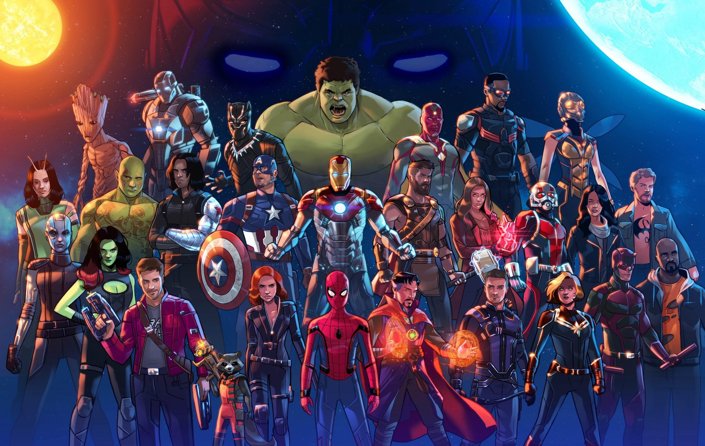
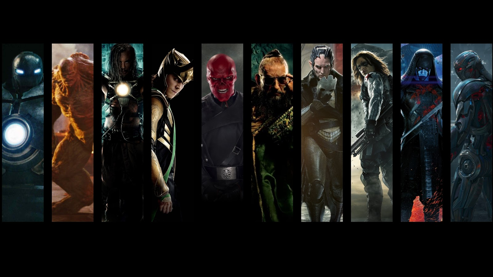

MARVEL
A Marvel Entertainment foi fundada em 1939, nos Estados Unidos, por Martin Goodman. A primeira revista em quadrinhos da companhia foi a Marvel Comics, lançada em 31 de agosto de 1939, quando apareceu o personagem Tocha Humana e Namor. A história da empresa, no entanto, teve início em 1933, quando houveram as primeiras publicações na revista Western Supernovel Magazine.
Ao longo dos anos, a Marvel enfrentou altos e baixos, mas no início dos anos 1990 , a companhia cresceu rapidamente, com a popularização das HQs nos Estados Unidos. Foi na mesma década que os personagens da empresa ganharam licença para o cinema, ganhando prestígio com filmes como X-Men, X-Men Origins: Wolverine, Homem-Aranha, Quarteto Fantástico, Hulk, Homem de Ferro e Blade.
Em 2009, a Marvel foi comprada pela Walt Disney Company, consagrando-se pela produção de enormes sucessos de bilheteria nos cinemas, incluindo Homem de Ferro 2, Thor e Captain America: The First Avenger. Hoje, a Marvel é uma das maiores empresas de entretenimento do mundo, com mais de 8 mil personagens em seu catálogo.
Hoje a Marvel Comics é considerada a maior editora de histórias em quadrinhos do mundo.

HERÓIS DA MARVEL
Não tem como falarmos dos heróis da marvel sem falar do STAN LEE.Ele foi um dos maiores e melhores criadores de histórias e personagens de todos os tempos. Inclusive, é por conta da emoção que suas histórias transmitem que ele se tornou um ídolo para várias gerações. Contudo, vale ressaltar que ele não é o único produtor dessas histórias viciantes da Marvel. Jack Kirby e Steve Dikto os dois foi responsavel em criar o Capitão America em 1941, que mais tarde esse personagem viria ser um dos mais famosos.
Stan Lee o roteirista e empresário foi um dos mais notáveis criadores de histórias em quadrinhos do mercado, sendo corresponsável por grandes super-heróis e vilões da Marvel Comics, como o Homem-Aranha, Homem de Ferro, X-Men, Quarteto Fantástico, Os Vingadores, Incrível Hulk, Demolidor e O Poderoso Thor e entres outros
A Marvel Comics conta com diversos personagens bem conhecidos como: Homem-Aranha, Homem-Formiga, Capitão América, Capitã Marvel, Vespa, Demolidor, Deadpool, Justiceiro, Homem de Ferro, Punho de Ferro, Motoqueiro Fantasma, Feiticeira Escarlate, Viúva Negra, Jessica Jones, Luke Cage , Máquina de Combate, Pantera Negra, Gavião Arqueiro, Doutor Estranho, Wolverine, Hulk, Thor, Garota Marvel, Falcão e suas equipes como: Vingadores, Defensores, Eternos, X-Men, A-Force, Manto e Adaga, Quarteto Fantástico, Guardiões da Galáxia, Agents of S.H.I.E.L.D, Jovens Vingadores, Fugitivos, Inumanos dentre outros.
A maioria dos personagens fictícios da Marvel operam em uma única realidade conhecida como o Universo Marvel, com a maioria dos locais refletindo lugares da vida real; Muitos personagens principais são ambientados em Nova York, Estados Unidos. O Universo Marvel é retratado como existente dentro de um "multiverso" composto por milhares de universos separados, todas as quais são as criações da Marvel Comics e todas elas, em certo sentido, "universos Marvel". Neste contexto, "Universo Marvel" é levado a se referir à continuidade mainstream Marvel, que é conhecida como Terra-616 ou Terra Prime
VILÕES
Em todo esse tempo, tivemos vilões bem memoráveis e outros que se tornaram infames. Vamos ver alguns deles?
Uns dos vilões mais recentes da atualidade é o Thanos, ele foi um vilão do Universo Marvel , ele conseguiu apagar a vida de milhões de pessoas e de heróis. Outro vilão conhecido e talvez "amável" foi Loki irmão de Thor, ele foi o vilão do primeiro filme da saga Vingadores. Ultron foi o vilão do segundo filme da saga Vingadores.
Além deles tem vários vilões espalhados no universo Marvel, eles são: Duende Verde, Caveira Vermelha, Doutor Destino, Rei do Crime, Magneto, Hela, Killmonger, Soldado Invernal entre outros.
